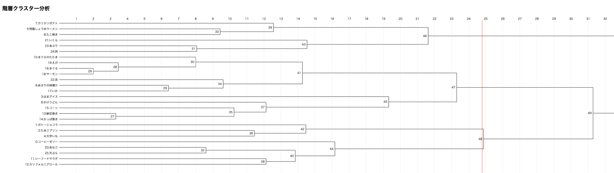

第5回
Top
Scatter plot
Csv
Explanation
私たちの班は、はま寿司の商品をいくつかピックアップして分析をしてみました
Scatter plot

Csv
csvデータのダウンロード
クリックするとデータをダウンロードしてみることができます！
Explanation
結果として、全体を通して散布図や分析がうまくいかず良いデータを取ることはできなかったです
うまくいかなかった理由は、
①商品を多くしすぎた、②項目をうまく考えられなかった、③評価するときにお寿司類でほぼ同じにしてしまった など
いろいろ考えられました…
そのため、個性的な特徴を見出せないデータ結果になってしまいました
累積寄与率は、20.55%と低かったです
クラスター分析では、で区切りました